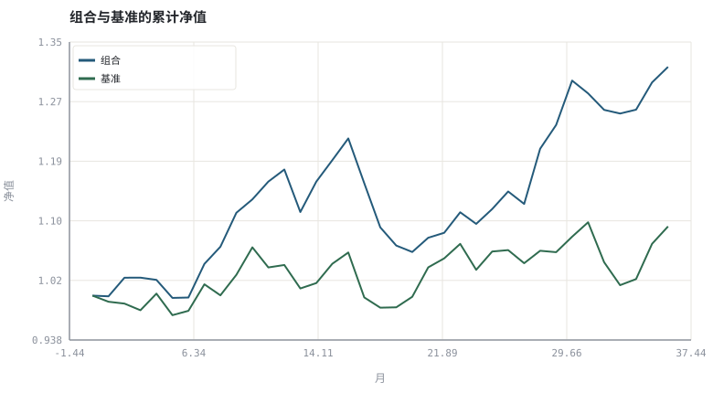
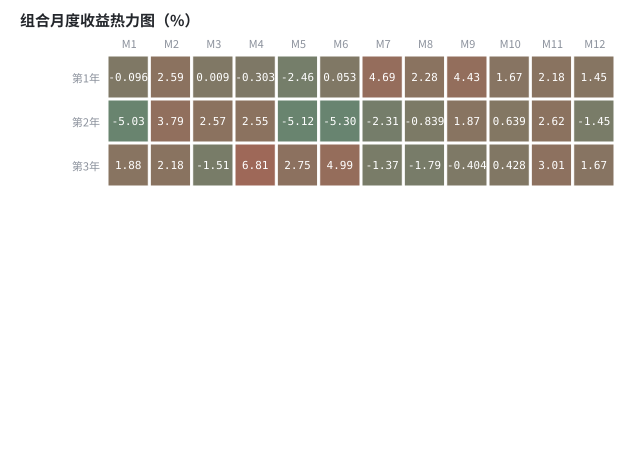

第 27 章绩效度量与归因：夏普、回撤与 Brinson
同一个组合，用不同指标可以讲出不同故事；先约定度量，再讨论好坏。
本章位置：第 26 章产出可信的净值曲线，本章把它翻译成可比指标；第 28 章 · 过拟合、多重检验与滚动样本外 检验这些指标是否来自过拟合。
绩效指标是一组监控面板：Sharpe 是吞吐/抖动比，MDD 是最长故障，TE 是相对 SLO 的偏差，MWR 是用户实际感知的延迟。单看一块面板做容量决策一定会误判。
- 能计算夏普、索提诺、Calmar、信息比率与跟踪误差。
- 能区分 TWR（策略收益）与 MWR（投资者体验收益）。
- 能完成一次 Brinson 配置/选股/交互归因。
- 能说明各指标的适用条件与盲点。
§知识点地图
每个知识点都配了 1～2 个扩展学习链接；本章完整资源清单见 扩展学习。
| # | 知识点 | 扩展学习 | 状态 |
|---|---|---|---|
| 1 | 年化收益与波动 | Rate of return · Logarithmic return | 正文已覆盖 |
| 2 | 夏普与索提诺 | Sharpe ratio · Sortino ratio | 正文已覆盖 |
| 3 | 最大回撤与 Calmar | Drawdown (economics) · Calmar ratio | 正文已覆盖 |
| 4 | 跟踪误差与信息比率 | Information ratio · Tracking error | 正文已覆盖 |
| 5 | TWR 与 MWR | Sharpe ratio · Sortino ratio | 正文已覆盖 |
| 6 | 内部收益率 IRR | Rate of return · Logarithmic return | 正文已覆盖 |
| 7 | Brinson 归因 | Performance attribution · Time-weighted return | 正文已覆盖 |
| 8 | 月度收益表 | Rate of return · Logarithmic return | 正文已覆盖 |
§27.1一张指标表与它的盲点
| 指标 | 公式 | 惩罚什么 | 盲点 |
|---|---|---|---|
| Sharpe | (μ − r_f)/σ | 全部波动 | 把大涨也算风险 |
| Sortino | (μ − r_f)/σ_下行 | 下行波动 | 目标收益 MAR 人为设定 |
| Calmar | 年化收益 / |MDD| | 最深回撤 | 只看一个历史极值 |
| 信息比率 | (μ_p − μ_b)/σ_(p−b) | 相对基准的偏离波动 | 依赖基准选择 |
| MDD | min(V_t/peak_t − 1) | 路径痛苦 | 不说明持续时间 |
第 02 章定义的五个风险量在这里全部派上用场：只报一个比率，等于只报平均延迟。完整报告应同时给出收益、波动、回撤、尾部、换手与相对基准的差。
§27.2TWR 与 MWR：策略视角 vs 投资者视角
TWR = ∏(1 + r_t) − 1 | MWR = 使 Σ CF_i / (1 + r)^i = 0 的 r
TWR 剔除了外部现金流，衡量策略本身；MWR（IRR）把申赎时点算进去，衡量投资者实际体验。若你在大涨前追加、在回撤前赎回，TWR 很好看而 MWR 很难看——这不是矛盾，是两个不同的问题。
§27.3Brinson 归因：把超额收益拆成三块
配置效应 = Σ(w_p − w_b)·r_b | 选股效应 = Σ w_b·(r_p − r_b) | 交互 = Σ(w_p − w_b)·(r_p − r_b)
三项之和等于组合收益减基准收益。工程上它就是一次逐项差分：权重差 × 基准收益、基准权重 × 收益差、以及两者的乘积。归因能告诉你钱从哪里来，但不能告诉你是能力还是运气——那需要更长样本与第 28 章的检验。
§Python 分析实例
实验 27-1 · 全套绩效指标、TWR/MWR 与 Brinson 归因
#!/usr/bin/env python3
# -*- coding: utf-8 -*-
"""合成 36 个月组合与基准收益，计算指标族、IRR 与两部门归因。
数据为合成数据或模型示意，仅用于教学，不构成投资建议。
"""
from __future__ import annotations
import math
import pathlib
import random
import statistics
import sys
sys.path.insert(0, str(pathlib.Path(__file__).resolve().parents[3] / "tools"))
from chart import Chart, candlestick, heatmap, BLUE, RED, GREEN, AMBER
FIG = pathlib.Path(__file__).resolve().parents[1] / "fig"
FIG.mkdir(exist_ok=True)
random.seed(7)
# ---- 参数区 ----
N_MONTHS = 36
ANN = 12
RF_M = 0.02 / 12 # 月度无风险利率
CONTRIB = (12, 10.0) # 第 12 个月追加投入
WP, WB = (0.60, 0.40), (0.50, 0.50)
RP, RB = (0.012, 0.004), (0.010, 0.005)
# ---- 计算与作图 ----
rng = random.Random(7)
port = [rng.gauss(0.008, 0.035) for _ in range(N_MONTHS)]
bench = [0.6 * p + rng.gauss(0.001, 0.020) for p in port]
def curve(rets):
v, out = 1.0, [1.0]
for r in rets:
v *= (1 + r)
out.append(v)
return out
cp, cb = curve(port), curve(bench)
excess = [p - RF_M for p in port]
down = [min(0.0, x) for x in excess]
down_sd = math.sqrt(statistics.fmean(x * x for x in down))
sharpe = statistics.fmean(excess) / statistics.pstdev(port) * math.sqrt(ANN)
sortino = statistics.fmean(excess) / down_sd * math.sqrt(ANN) if down_sd else 0.0
peak, mdd = cp[0], 0.0
for v in cp:
peak = max(peak, v)
mdd = min(mdd, v / peak - 1)
cagr = cp[-1] ** (ANN / N_MONTHS) - 1
calmar = cagr / abs(mdd) if mdd else 0.0
active = [p - b for p, b in zip(port, bench)]
te = statistics.pstdev(active) * math.sqrt(ANN)
ir = statistics.fmean(active) * ANN / te if te else 0.0
acct = 100.0
for i, r in enumerate(port):
if i == CONTRIB[0]:
acct += CONTRIB[1]
acct *= (1 + r)
cf = [-100.0] + [0.0] * N_MONTHS
cf[CONTRIB[0]] -= CONTRIB[1]
cf[-1] += acct
def npv(rate):
return sum(c / (1 + rate) ** i for i, c in enumerate(cf))
lo, hi = -0.50, 0.50
for _ in range(120):
mid = (lo + hi) / 2
if npv(mid) > 0:
lo = mid
else:
hi = mid
mwr_m = (lo + hi) / 2
alloc = sum((WP[i] - WB[i]) * RB[i] for i in range(2))
select = sum(WB[i] * (RP[i] - RB[i]) for i in range(2))
inter = sum((WP[i] - WB[i]) * (RP[i] - RB[i]) for i in range(2))
r_p, r_b = sum(WP[i] * RP[i] for i in range(2)), sum(WB[i] * RB[i] for i in range(2))
c = Chart(FIG / "27-equity.svg", "组合与基准的累计净值", xlabel="月", ylabel="净值")
c.line(range(N_MONTHS + 1), cp, BLUE, label="组合")
c.line(range(N_MONTHS + 1), cb, GREEN, label="基准")
print("净值图:", c.save())
matrix = [[100 * port[y * 12 + m] for m in range(12)] for y in range(3)]
heatmap(FIG / "27-monthly.svg", matrix, ["第1年", "第2年", "第3年"],
["M%d" % (m + 1) for m in range(12)], title="组合月度收益热力图（%）",
vmin=-8, vmax=8)
print("月度图:", str(FIG / "27-monthly.svg"))
print("CAGR=%.2f%% Sharpe=%.3f Sortino=%.3f MDD=%.1f%% Calmar=%.3f TE=%.2f%% IR=%.3f" %
(100 * cagr, sharpe, sortino, 100 * mdd, calmar, 100 * te, ir))
print("TWR=%.2f%% MWR年化=%.2f%% | Brinson 配置=%.3f%% 选股=%.3f%% 交互=%.3f%% 合计=%.3f%% (实际 %.3f%%)" %
(100 * (cp[-1] - 1), 100 * ((1 + mwr_m) ** ANN - 1),
100 * alloc, 100 * select, 100 * inter,
100 * (alloc + select + inter), 100 * (r_p - r_b)))操作：核对 Brinson 三项之和是否等于 r_p − r_b；再改动 CONTRIB 的时点看 MWR 变化。 预期与判读：TWR 只反映策略收益，MWR 把追加资金时点算进去，两者可以明显不同。Brinson 三项精确相加等于超额收益，是一次可逐项核对的差分分解。
改参数看趋势：把 WP 改成与 WB 相同，配置效应与交互项应归零。 文件位置：part5/27-performance/code/27-performance.py


代码块右上角可一键复制；仓库里的 code/*.py 由 tools/extract_code.py 从这些代码块自动抽取。脚本只用标准库、固定 random.seed(7)，运行后写出 fig/*.svg；批量运行用 ./tools/run_python.sh。
§本章参考资料
按本章知识点挑选的精读资料；更多检索入口见 扩展学习。
Sortino ratio
百科 · 参考资料只用下行波动衡量风险调整收益
怎么用：下行波动口径的风险调整收益https://en.wikipedia.org/wiki/Sortino_ratio
Time-weighted return
百科 · 参考资料剔除外部现金流后的策略收益
怎么用：时间加权收益，剔除外部现金流https://en.wikipedia.org/wiki/Time-weighted_return
Performance attribution
百科 · 参考资料配置效应、选股效应与交互项
怎么用：绩效归因的标准分解https://en.wikipedia.org/wiki/Performance_attribution
§常见误区
- 用月度收益的标准差直接当年化波动，忘记乘 √12。
- 把 TWR 当投资者实际收益，忽略申赎时点。
- 更换基准后仍沿用旧的信息比率。
- Brinson 归因未覆盖全部资产或权重和不为 1。
§习题与思考
- 推导 Brinson 三项之和等于 r_p − r_b。
- 在示例里把追加资金挪到最大回撤前，比较 TWR 与 MWR 的差距。
- 说明 Sortino 的 MAR 参数变化会怎样改变排序。
§扩展学习
以下资料按本章知识点挑选，可直接精读或对照真实数据；知识点地图里每一条也挂了 1～2 个直达链接。
- Sharpe ratio（百科）：单位总风险的超额收益
Sharpe ratio - Sortino ratio（百科）：只用下行波动衡量风险调整收益
Sortino ratio - Calmar ratio（百科）：年化收益与最大回撤之比
Calmar ratio - Performance attribution（百科）：配置效应、选股效应与交互项
Performance attribution - pyfolio（工具）：组合绩效与风险归因报告
pyfolio
继续扩展：在 Google Scholar 检索本章相关论文 · 在 MIT OCW 检索配套课程 · 在 arXiv 检索预印本 · 全书参考资源总表 · 附录 A 速查与链接总表
§延伸阅读与内链
- 第 28 章 · 过拟合、多重检验与滚动样本外 样本内/外对照；第 31 章 · 投资政策说明书与长期复盘 年度复盘与 IPS。